นายนิติภูมิ มอญดี รหัสนักศึกษา 68130231
รหัสนักศึกษา 3 ตัวท้ายคือ 231 จึงใช้ชื่อ www.id-231.com และ admin.id-231.com GitHub: https://github.com/nitipoommorndee-wq/ct655-k8s-ingress-id231
1. ภาพรวมของระบบ
ใช้ cluster เดิม 3 node และเครื่อง k8s-lb จากงานที่แล้ว งานนี้เพิ่ม Ingress Controller (ingress-nginx) เข้าไปใน cluster
เพื่อแยกเส้นทางตามชื่อ host และ path ไปยังแอป 3 ตัว คือ app-about, app-research และ app-api
แต่ละแอปมี Service แบบ ClusterIP ของตัวเอง ส่วนเครื่อง LB รับที่พอร์ต 80 แล้วส่งต่อไปที่ NodePort 30081 ของ Ingress Controller
ภาพที่ 1 สถาปัตยกรรมระบบ
| URL | แอป | การทำงาน |
|---|
www.id-231.com/about | app-about | แสดงรูป ชื่อ และรหัสนักศึกษา (nginx) |
www.id-231.com/research | app-research | แสดงสรุปงานวิจัย |
www.id-231.com/api/<text> | app-api | แสดงข้อความตัวใหญ่กลางจอ |
admin.id-231.com | app-research | Ingress เปลี่ยน path เป็น /edit เปิดหน้าแก้ไขและบันทึกสรุปงานวิจัย |
2. ไฟล์ทั้งหมดของงาน
ไฟล์ทั้งหมดอยู่ในโฟลเดอร์ ~/id-231 บนเครื่อง k8s-control โครงสร้างเดียวกับใน GitHub
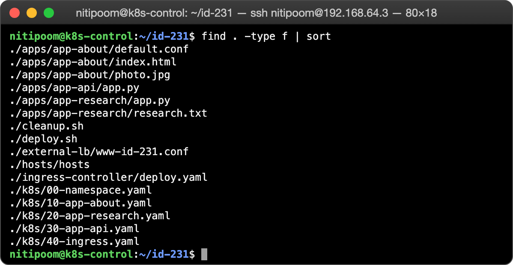
ภาพที่ 2 ไฟล์ในโฟลเดอร์งาน
แอป app-research และ app-api เขียนด้วย Python (ใช้ http.server ที่มีมากับ Python) ส่วน app-about เป็นหน้า HTML
โค้ดและหน้าเว็บใส่เข้า Pod ผ่าน ConfigMap จึงใช้ image สำเร็จรูป python:3.12-alpine และ nginx:1.25 ได้เลย ไม่ต้อง build image เอง
3. K8s Manifest
3.1 Namespace
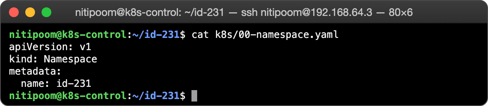
ภาพที่ 3 k8s/00-namespace.yaml
3.2 app-about
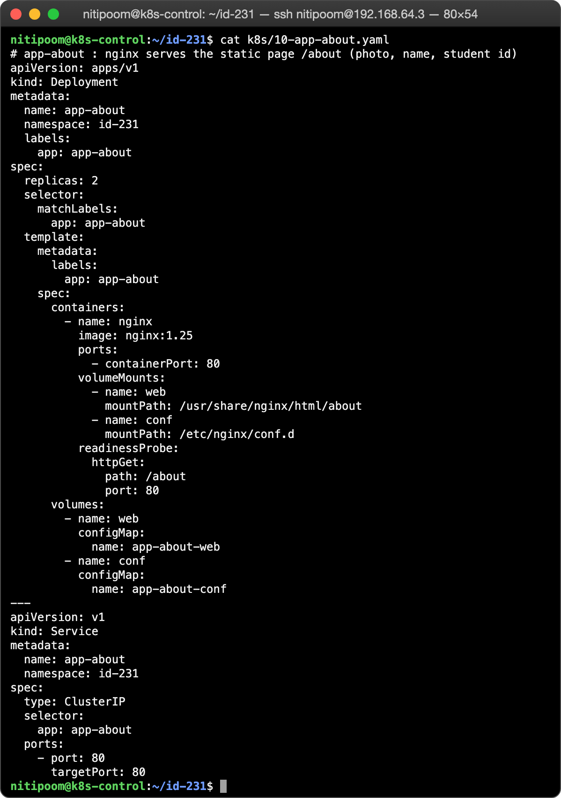
ภาพที่ 4 k8s/10-app-about.yaml
mount ConfigMap app-about-web (index.html กับ photo.jpg) ไว้ที่โฟลเดอร์เว็บของ nginx และ mount app-about-conf เป็น config ของ nginx ให้ตอบที่ path /about
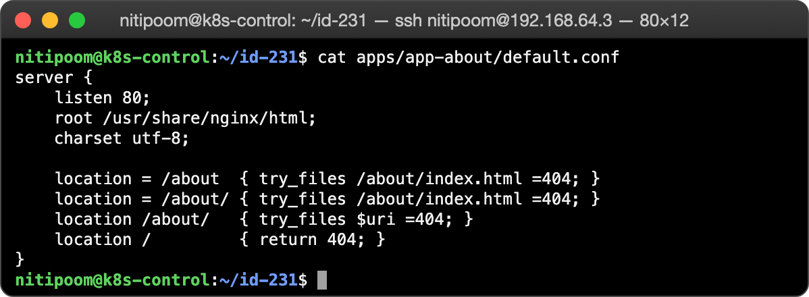
ภาพที่ 5 apps/app-about/default.conf
3.3 app-research
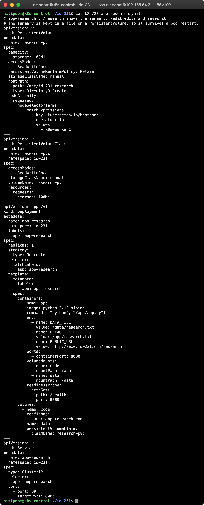
ภาพที่ 6 k8s/20-app-research.yaml (PV, PVC, Deployment, Service)
ข้อความสรุปงานวิจัยเก็บเป็นไฟล์ /data/research.txt บน PersistentVolume เพื่อให้ข้อมูลที่แก้ไขแล้วไม่หายเมื่อ Pod ถูกสร้างใหม่
PV เป็นแบบ hostPath อยู่บน k8s-worker1 จึงใช้ 1 replica และ strategy แบบ Recreate
3.4 app-api
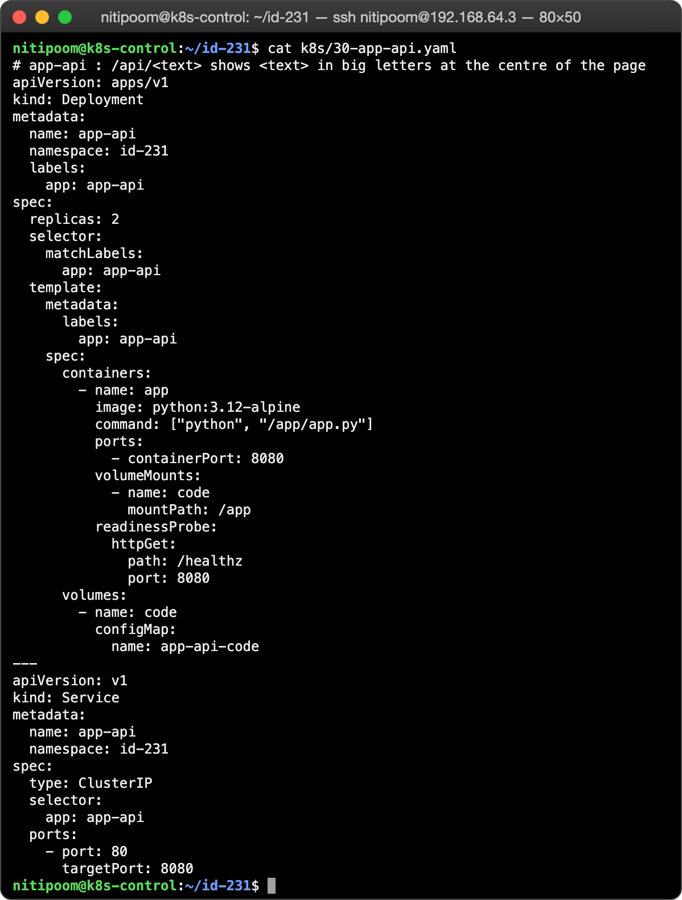
ภาพที่ 7 k8s/30-app-api.yaml
3.5 Ingress
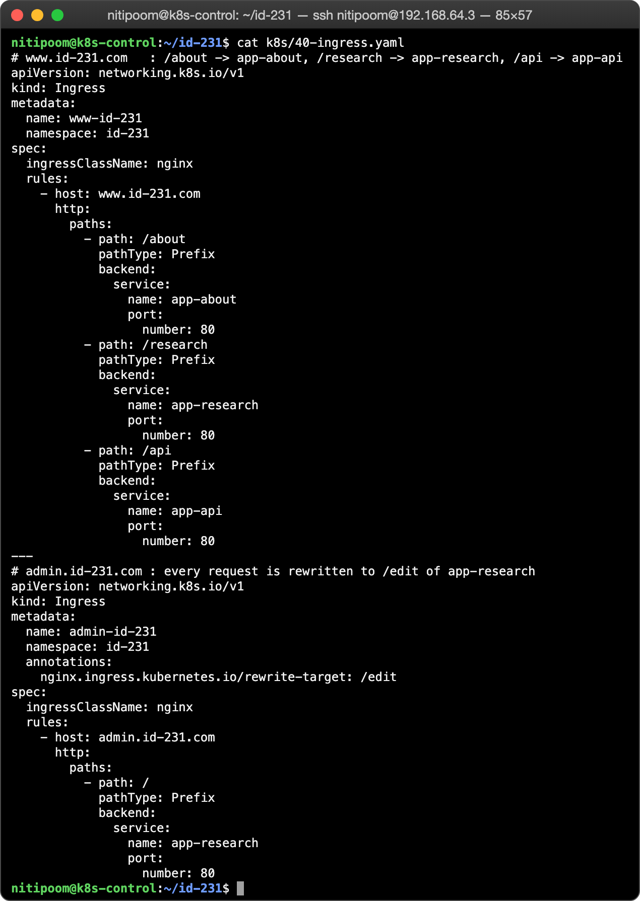
ภาพที่ 8 k8s/40-ingress.yaml
- Ingress
www-id-231 ใช้ host www.id-231.com แยก 3 path ไปที่ Service ของแต่ละแอป
- Ingress
admin-id-231 ใช้ host admin.id-231.com และใส่ annotation rewrite-target: /edit ทุก request จึงถูกส่งไปที่ /edit ของ app-research
3.6 Ingress Controller
ใช้ manifest ของ ingress-nginx v1.12.1 แบบ baremetal แก้อย่างเดียวคือกำหนด NodePort ให้คงที่เป็น 30081 (http) และ 30443 (https) เพื่อให้ LB ชี้มาได้
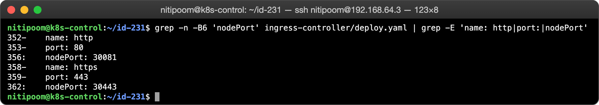
ภาพที่ 9 NodePort ที่กำหนดใน ingress-controller/deploy.yaml
4. ขั้นตอนการสั่ง kubectl
4.1 ติดตั้ง Ingress Controller
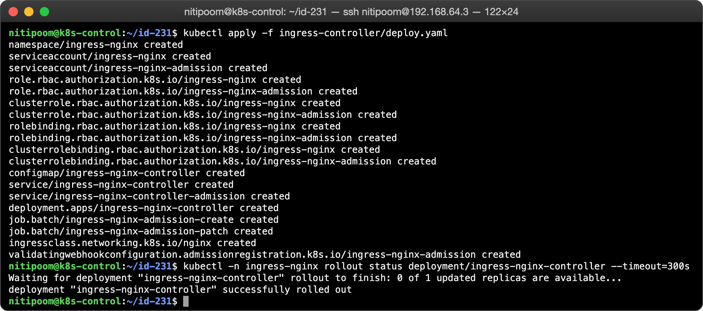
ภาพที่ 10 apply ingress-nginx แล้วรอจน controller พร้อม
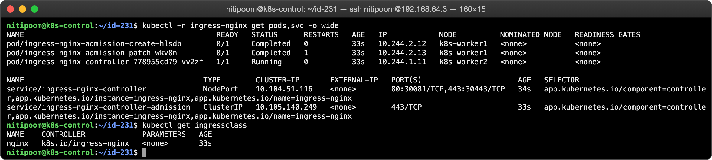
ภาพที่ 11 Pod, Service และ IngressClass ของ ingress-nginx
4.2 สร้าง Namespace และ ConfigMap
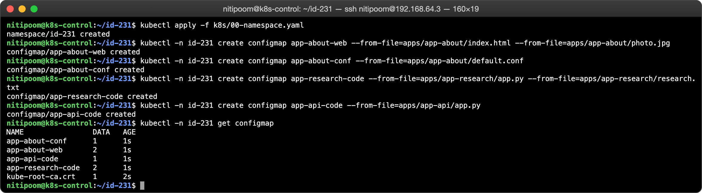
ภาพที่ 12 สร้าง namespace id-231 และ ConfigMap จากไฟล์ในโฟลเดอร์ apps
4.3 สร้าง Deployment และ Service
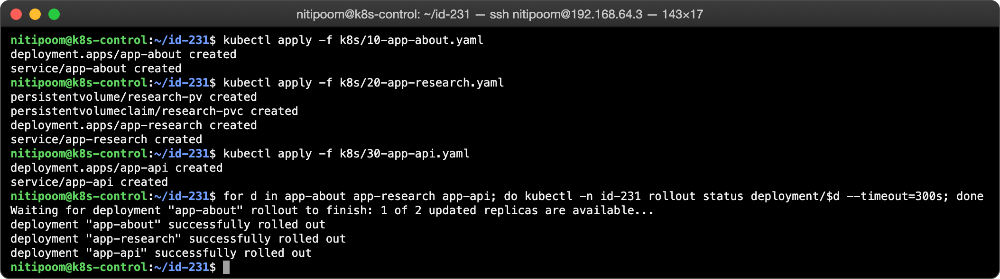
ภาพที่ 13 apply แอปทั้ง 3 ตัว แล้วรอ rollout
4.4 สร้าง Ingress
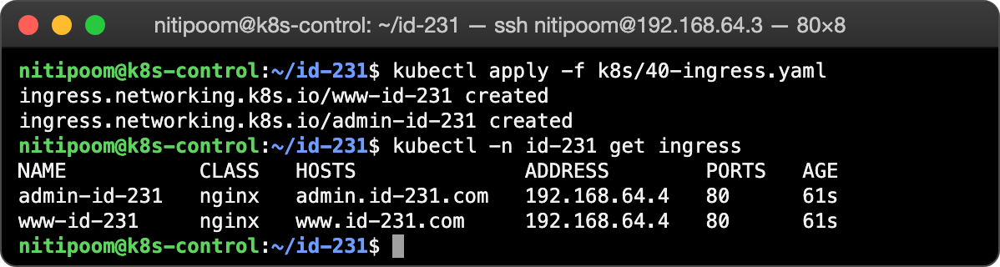
ภาพที่ 14 apply Ingress ทั้ง 2 ตัว
ขั้นตอนทั้งหมดนี้รวมไว้ในไฟล์ deploy.sh สั่งครั้งเดียวได้
5. External LB และ /etc/hosts
บนเครื่อง k8s-lb เพิ่มไฟล์ /etc/nginx/conf.d/www-id-231.conf รับ request ของ 2 ชื่อนี้แล้วส่งต่อไปที่ NodePort 30081 ของทุก node
โดยส่ง header Host เดิมต่อไปด้วย เพราะ Ingress ใช้ชื่อ host ในการเลือกเส้นทาง
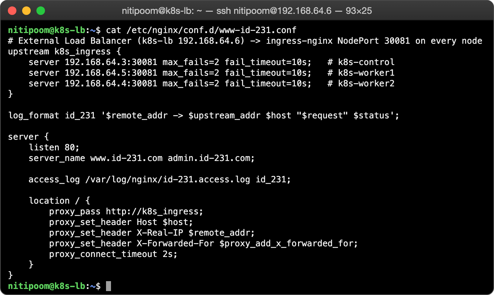
ภาพที่ 15 config ของ LB สำหรับ id-231
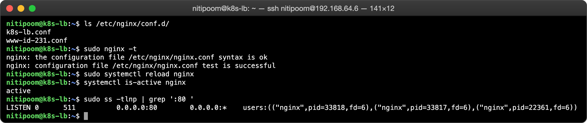
ภาพที่ 16 ตรวจ config แล้ว reload NginX
ชื่อ id-231.com ไม่ได้จดทะเบียนใน DNS จริง จึงเพิ่ม 2 บรรทัดใน /etc/hosts ของเครื่อง Linux ที่ใช้ทดสอบ ให้ชื่อทั้งสองชี้ไปที่ IP ของ LB (192.168.64.6)
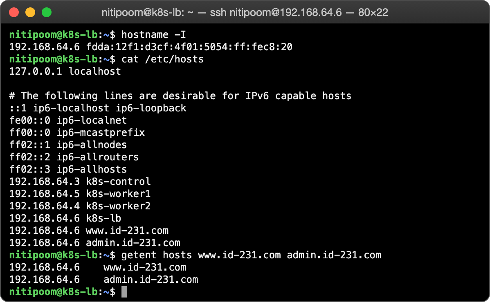
ภาพที่ 17 /etc/hosts ของเครื่อง Linux
6. การตรวจสอบการทำงาน
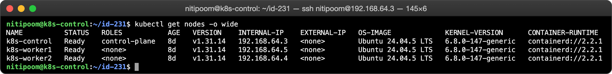
ภาพที่ 18 node ของ cluster
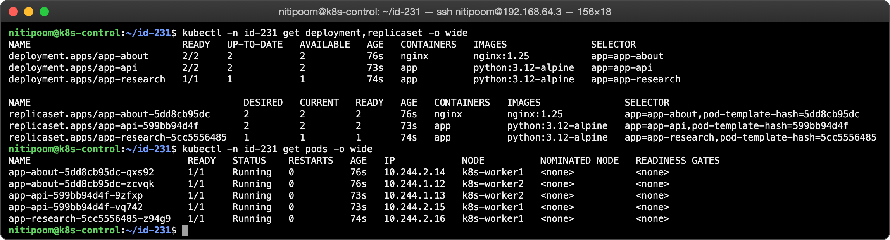
ภาพที่ 19 Deployment, ReplicaSet และ Pod ใน namespace id-231
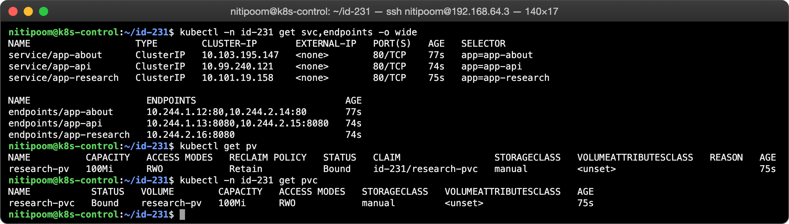
ภาพที่ 20 Service, Endpoints, PV และ PVC
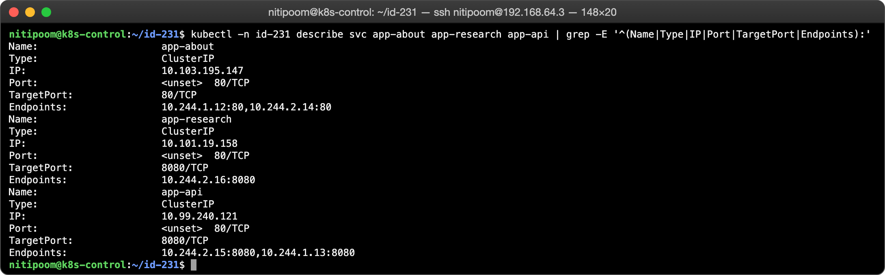
ภาพที่ 21 describe Service ทั้ง 3 ตัว
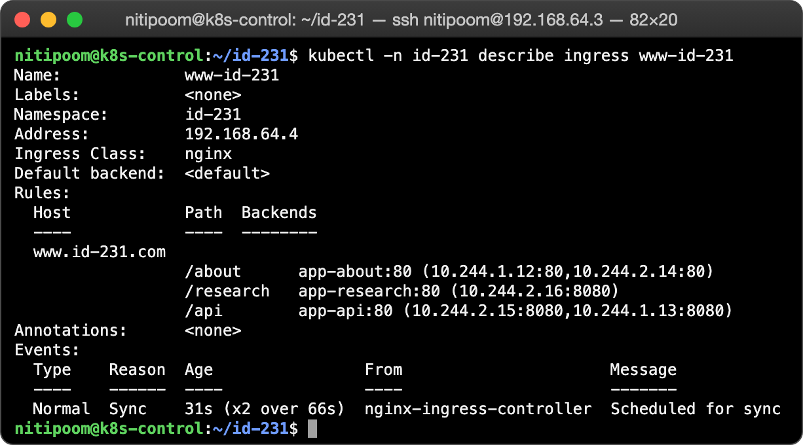
ภาพที่ 22 describe Ingress www-id-231
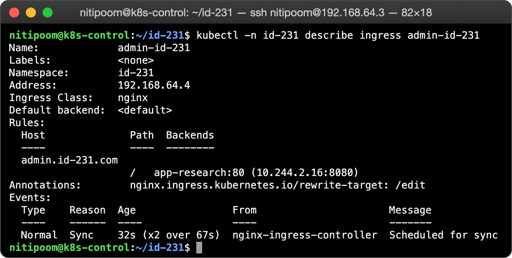
ภาพที่ 23 describe Ingress admin-id-231
ใน describe เห็นว่าแต่ละ path ชี้ไปที่ Service และ Pod IP ถูกตัว และ Ingress ของ admin มี annotation rewrite-target เป็น /edit
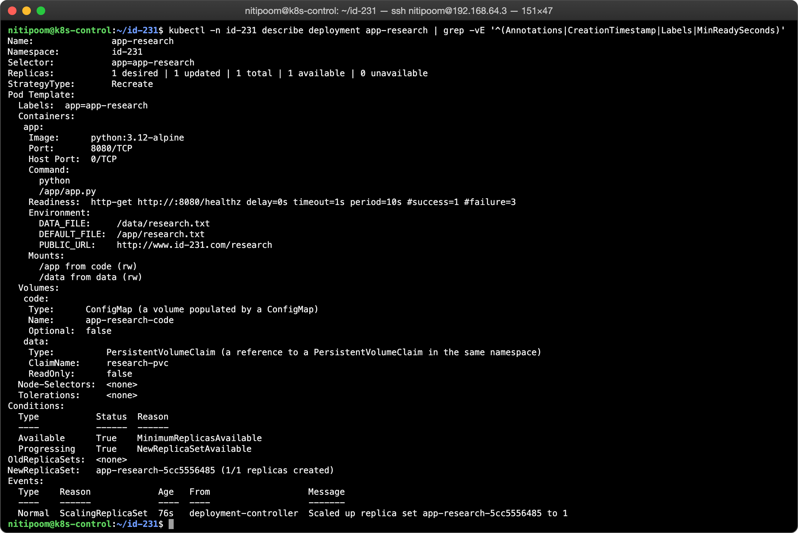
ภาพที่ 24 describe Deployment app-research
7. ทดสอบการเข้าใช้งาน
ทดสอบจากเครื่อง Linux ที่ตั้ง /etc/hosts ไว้ เรียกด้วยชื่อ host ตรง ๆ ได้ 200 ทุกบริการ (ภาพหน้าจอของเว็บทุกหน้าอยู่ในไฟล์ผลการทดสอบ)
 ภาพที่ 25 ทดสอบ /about
ภาพที่ 25 ทดสอบ /about
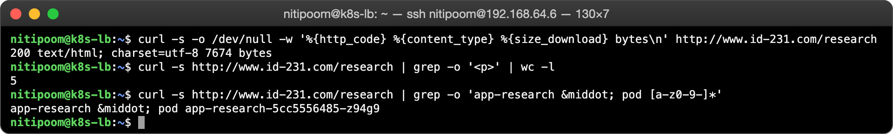
ภาพที่ 26 ทดสอบ /research
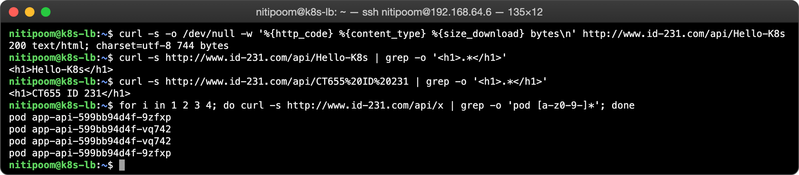
ภาพที่ 27 ทดสอบ /api/<ข้อความ>
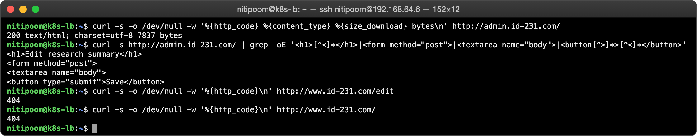
ภาพที่ 28 ทดสอบ admin.id-231.com
www.id-231.com/edit ได้ 404 เพราะหน้าแก้ไขเปิดให้เข้าทาง admin.id-231.com อย่างเดียว
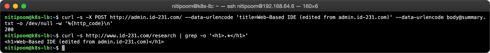
ภาพที่ 29 แก้ไขสรุปงานวิจัยผ่าน admin.id-231.com แล้วเปิด /research ดู
 ภาพที่ 30 ลบ Pod ของ app-research แล้วดูไฟล์ข้อมูลใน Pod ใหม่
ภาพที่ 30 ลบ Pod ของ app-research แล้วดูไฟล์ข้อมูลใน Pod ใหม่
หลังลบ Pod แล้ว Pod ตัวใหม่ยังอ่านข้อมูลที่แก้ไว้ได้ เพราะไฟล์อยู่บน PersistentVolume
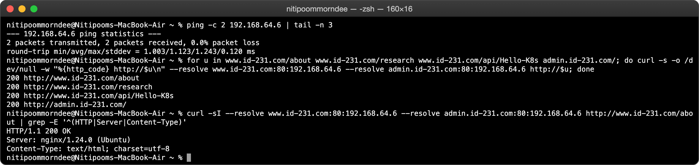
ภาพที่ 31 ทดสอบจากเครื่อง MacBook
เครื่อง MacBook ไม่ได้แก้ /etc/hosts จึงใช้ curl --resolve ให้ชื่อชี้ไปที่ LB แทน ผลที่ได้เหมือนกัน และ header Server เป็นของ NginX บนเครื่อง LB
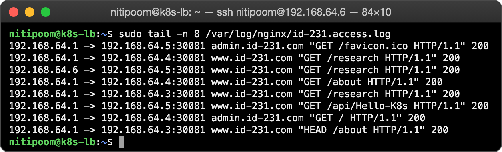
ภาพที่ 32 access log ของ LB
 ภาพที่ 33 log ของ Ingress Controller นับตาม path และ Service ปลายทาง
ภาพที่ 33 log ของ Ingress Controller นับตาม path และ Service ปลายทาง
ใน log ของ Ingress Controller เห็นว่า /about ไป app-about, /research ไป app-research, /api ไป app-api และ request ของ admin (path /) ไปที่ app-research
8. สรุป
- เข้าใช้บริการได้ครบ 4 รายการตามโจทย์ ด้วยชื่อ www.id-231.com และ admin.id-231.com
- Ingress เป็นตัวแยกเส้นทางตาม host และ path ไปที่ Service แบบ ClusterIP ของแต่ละแอป ไม่ต้องเปิด NodePort แยกทีละแอป
- admin.id-231.com ใช้ app-research ตัวเดียวกับ /research แต่ถูก rewrite ไปที่ /edit และข้อมูลที่บันทึกเก็บบน PersistentVolume